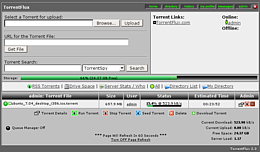

Torrentflux
Archivierte Anleitung
Dieser Artikel wurde archiviert, da er - oder Teile daraus - nur noch unter einer älteren Ubuntu-Version nutzbar ist. Diese Anleitung wird vom Wiki-Team weder auf Richtigkeit überprüft noch anderweitig gepflegt. Zusätzlich wurde der Artikel für weitere Änderungen gesperrt.
Zum Verständnis dieses Artikels sind folgende Seiten hilfreich:
Torrentflux ist ein auf PHP basierender BitTorrent-Client. Das bedeutet, dass man auf Torrentflux mit einem herkömmlichen Browser wie z.B. Firefox zugreifen kann. Für gewöhnlich läuft Torrentflux nicht direkt auf dem eigenen Rechner, sondern auf einem Server. Auf den Server können mehrere Clients gleichzeitig zugreifen. Ein mögliches Einsatzgebiet sind somit z.B. kleinere Netzwerke, in denen dann alle Torrent-Downloads von einem Server verwaltet werden. Torrentflux bietet einen enormen Funktionsumfang wie z.B eine anpassbare Oberfläche, eine integrierte Suche, RSS-Feeds und vieles mehr.
In dieser Anleitung wird erklärt, wie man einen Torrentflux-Server aufsetzt und gibt einen groben Überblick über Einstellungen und Funktionen von Torrentflux. Für die Installation auf einen Arbeitsplatzrechner eignet sich Torrentflux nicht, da für den (Dauer)Betrieb auf dem Rechner ein Webserver wie Apache oder lighttpd laufen muss.
|  |
| Weboberfläche von TorrentFlux |
Installation¶
Für die Installation muss lediglich das Paket
torrentflux (universe)
installiert [2] werden. Da es allerdings unter gewissen Umständen zu Problemen beim automatischen Einrichten der Torrentflux-Datenbank via dbconfig kommt, kann eine manuelle Installation sinnvoll sein.
Manuell¶
Für die manuelle Installation auf einem entfernten Webserver, sollte man wissen wie man ein Terminalfenster öffnet [6]. Zudem sind grundlegende Konsolenbefehle für Dateioperationen ohne grafische Oberfläche vorausgesetzt. [7]
Artikel für fortgeschrittene Anwender
Dieser Artikel erfordert mehr Erfahrung im Umgang mit Linux und ist daher nur für fortgeschrittene Benutzer gedacht.
Grundsystem einrichten¶
Folgende Pakete müssen installiert [2] werden.
apache2
php5
php5-mysql
php5-curl
mysql-server
Falls schon ein LAMP-Server aufgesetzt wurde (z.B. mit der Ubuntu Server CD), müssen nur noch das folgende Paket installiert [2] werden:
php5-curl
Datenbank vorbereiten¶
Zunächst muss für die Datenbank MySQL ein Passwort festgelegt werden. Ist dies bereits geschehen, kann dieser Unterpunkt übersprungen werden.
mysqladmin -u root password mein-Passwort
Für mein-Passwort ist hierbei ein Passwort eigener Wahl zu setzen.
Im Verzeichnis des Webservers /var/www kann schon vorausschauend ein Unterverzeichnis /torrentflux erstellt werden [7].
Herunterladen und entpacken¶
Achtung!
Um Sicherheitsrisiken zu vermindern, sollten manuell installierte Programmen regelmäßig auf den aktuellen Stand gebracht werden.
Das Archiv von SourceForge  herunterladen (ohne grafische Oberfläche mit wget) und entpacken [4]. Die benötigten Dateien für den Webserver befinden sich im Archiv im Unterordner /html und müssen in das Verzeichnis des Webservers /var/www/torrentflux/ kopiert [7] werden.
herunterladen (ohne grafische Oberfläche mit wget) und entpacken [4]. Die benötigten Dateien für den Webserver befinden sich im Archiv im Unterordner /html und müssen in das Verzeichnis des Webservers /var/www/torrentflux/ kopiert [7] werden.
Erstellen der Datenbank¶
Im nächsten Schritt muss Torrentflux das mysql Passwort für die Datenbank MySQL mitgeteilt werden. Dazu editiert [3] man die Datei /var/www/torrentflux/config.php mit Root-Rechten.
cfg[”db_pass”] = 'mein-Passwort'; //
Daraufhin erstellt man mit folgendem Befehl die Datenbank.
mysqladmin -u root -p create torrentflux
Jetzt muss die Datenbank noch mit einer vordefinierten Tabelle gefüllt werden. Dafür wechselt [7] man in das entpackte Verzeichnis. Die MySQL Tabellendefinition befindet sich in einer Textdatei im Unterordner /sql:
mysql -u root -p torrentflux < sql/mysql_torrentflux.sql
Installation abschließen und aufräumen¶
Um die heruntergeladenen Dateien speichern zu können, muss abschließend noch das Verzeichnis /var/www/torrentflux/downloads Schreib- und Lesezugriff [5] für alle Benutzer bekommen.
sudo chmod 777 /var/www/torrentflux/downloads
Abschließend sollte noch das heruntergeladene torrentflux_x.x.tar.gz Archiv und der entpackte Ordner /torrentflux_x.x (x.x entspricht der Versionsnummer) gelöscht werden. [7]
Torrentflux ist nun installiert und wird automatisch beim Systemstart gestartet.
Benutzung¶
Von einem Rechner kann Torrentflux nun mit einem Webbrowser über die Adresse http://localhost/torrentflux/ zugegriffen werden. Statt localhost gibt man hier die jeweilige IP-Addresse des Servers an.
Erste Anmeldung¶
Achtung!
Beim ersten Aufruf von Torrentflux wird beim Anmelden das Administratorkonto erstellt. Man sollte sich daher den eingegebenen Benutzernamen und das Passwort gut merken.
Nach der ersten Anmeldung erscheint zunächst das "Settings" Menü.
Einstellungen (Admin)¶
Settings¶
Im "Settings" Menü sind unter anderem die Pfade die Torrentflux benötigt angegeben. Torrentflux prüft selbst ob die Pfade z.B zu Python korrekt sind.
| Der Pfad ist korrekt und kann genutzt werden | |
| Der Pfad ist nicht korrekt. Ein Lösungsvorschlag wird in rot angezeigt. |
Hier kann auch das Standard Download-Verzeichnis festgelegt werden. Einige Einstellungen Betreffen z.B. die maximale Hoch/Herunterlader-rate, und die zu verwendenden Ports. Weitere Einstellungen betreffen z.B. die Sprache, und das Standard-Thema in dem Torrentflux für die Benutzer erscheinen soll. Einige dieser Einstellungen sind nicht für den Admin sichtbar, sondern nur für normale Benutzer.
Queue¶
Im "queue" Menü kann eingestellt werden, ob Torrentflux eine Warteschlange einrichten soll
Search settings¶
Unter "search settings" ist es möglich die Standard Suchmaschine festzulegen. Hier können auch Filter für Worte wie "Adult" eingestellt werden, so das diese in der Suche nicht auftauchen.
Activity¶
"activity" zeigt einen Log der letzten 30 Tage an. Hier wird z.B. aufgeführt, welcher Benutzer welchen Download wann gestartet hat.
Links¶
Im "links" Menü kann der Admin Links eintragen, die dann für jeden Benutzer auf der Startseite sichtbar sind.
New user¶
Der Admin kann unter "new user" weiter Benutzer anlegen. Torrentflux kennt dabei zwei Arten von Benutzern.
Administrator: kann sämtliche Einstellungen vornehmen und z.B. Benutzer erstellen und löschen
Normal User: Kann nur Einstellungen die ihn selbst betreffen vornehmen.
Backup¶
Unter "backup" kann eine Sicherung der Torrentflux Datenbank erzeugt und heruntergeladen werden.
Torrents starten¶
Unter /home kann ein Torrent auf verschiedene Weisen gestartet werden
Eine .torrent Datei kann vom eigenen Rechner hochgeladen werden
Die URL zu einer .torrent Datei kann eingegeben werden
Es kann in externen Suchmaschinen, die jedoch in die Torrentflux-Oberfläche integriert sind, nach Torrents gesucht werden.
Über "RSS Torrents" kann ein Torrent aus einem RSS-Feed hinzugefügt werden.
In der Standardeinstellung von Torrentflux beginnt der Download nicht sofort. Er muss erst manuell gestartet werden. Dies geschieht durch Klicken der Symbole rechts neben dem Listeneintrag. Dort können auch weitere Aktionen durchgeführt werden. Eine Übersicht der Möglichkeiten:
| Zeig die Eigenschaften des Torrent an | |
| Startet den Torrent | |
| Stoppt den Torrent | |
| Entfernt den Torrent aus der Warteschlange | |
| Lädt den heruntergeladenen Torrent noch weiter hoch | |
| Löscht den Torrent |
Wird ein Torrent gestartet erscheint ein Fenster in dem noch einige Einstellungen wie die maximale Hoch/Herunterlader-rate festgelegt werden können. Mit "Run Torrent" wird der Torrent gestartet. Es ist auf jeden fall darauf zu achten, dass pro laufenden Torrent ein Port freigeschaltet wird, sonst funktionieren nur so viele Torrents, wie Ports frei sind.
Links neben dem Listeneintrag wird der Status der Torrents angezeigt.
| Der Torrent ist nicht gestartet | |
| Der Torrent wird heruntergeladen | |
| Es kann keine Verbindung zum Tracker aufgebaut werden oder es werden keine Quellen gefunden | |
| Verbindungsprobleme zu den Peers (Firewall überprüfen) |
Ist der Download beendet, kann die Datei unter "My Directory" vom Torrentflux Server auf den Rechner heruntergeladen und anschließend auch vom Server gelöscht werden.
Torrentflux-b4rt¶
Torrentflux-b4rt ist ein Projekt, dass aus Torrentflux entstanden ist. Ziel der Entwickler ist es, Modifikationen zu Torrentflux, die im Laufe der Zeit erschienen sind, fest zu implementieren. Torrentflux-b4rt bietet die gleichen Features wie Torrentflux sowie einige zusätzliche Funktionen wie individuelle Einstellungen für jeden Torrent oder einen integrierten Streamingserver. Torrentflux-b4rt ist nicht in den offiziellen Paketquellen enthalten und muss manuell installiert werden. Weitere Informationen findet man auf der Projektseite.
- Erstellt mit Inyoka
-
 2004 – 2017 ubuntuusers.de • Einige Rechte vorbehalten
2004 – 2017 ubuntuusers.de • Einige Rechte vorbehalten
Lizenz • Kontakt • Datenschutz • Impressum • Serverstatus -
Serverhousing gespendet von